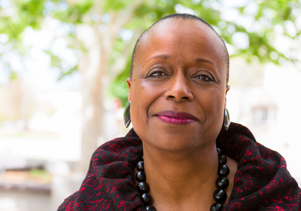

Our Leadership
This document will open in a new window.
If you are using assistive technology and need help accessing this document in another format, please contact us via this email address:
ssd@info.collegeboard.org
-
David Coleman
President and Chief Executive Officer
David Coleman guides the overall direction and strategic priorities of the organization, with the goal of ensuring all students in our care are prepared to successfully complete college and career training.
Read more about David ColemanClose Dialog ×David Coleman
President and Chief Executive Officer
David grew up in a family of educators and followed them into the field. He went to public school in New York City before enrolling at Yale University. At Yale, he taught reading to high school students from low-income families and started Branch, an innovative community service program for inner-city students in New Haven, Conn. Based on the success of Branch, David received a Rhodes Scholarship, which he used to study English literature at the University of Oxford and classical educational philosophy at the University of Cambridge in the U.K. He returned to the U.S. to work at McKinsey & Company for five years, where he led much of the firm’s pro bono work in education.
With a team of educators, David founded the Grow Network, an organization committed to making assessment results truly useful for teachers, parents and students. The Grow Network delivered breakthrough-quality reports for parents and teachers as well as individualized learning guides for students. McGraw-Hill acquired the Grow Network in 2005.
In 2007, David left McGraw-Hill and cofounded Student Achievement Partners, a nonprofit that assembles educators and researchers to design actions based on evidence to improve student outcomes. Student Achievement Partners played a leading role in developing the Common Core State Standards in math and literacy. David left Student Achievement Partners in the fall of 2012 to become president of the College Board.
David was named to the 2013 Time 100, the magazine’s annual list of the 100 most influential people in the world. He has been recognized as one of Time magazine’s “11 Education Activists for 2011” and was one of the NewSchools Venture Fund Change Agents of the Year for 2012. He is the proud father of two.
-
Jeremy Singer
Chief Operating Officer
Jeremy Singer helps set the strategic direction of the College Board and leads the execution of efforts that drive successful outcomes for students.
Read more about Jeremy SingerClose Dialog ×Jeremy Singer
Chief Operating Officer
As chief operating officer, Jeremy provides leadership to AP® and related instructional products, and to the IT and digital solutions, higher education, and international divisions of the College Board. In addition, he is responsible for ensuring that the College Board’s administrative and functional units are aligned and focused on the organization’s strategic goals and priorities. Jeremy also drives our Access to Opportunity campaign, designed to improve equity and access for all students, and our data science efforts, ensuring that we make evidence-based decisions.
Jeremy has extensive leadership experience in both not-for-profit and for-profit education organizations, having served as president of Kaplan Test Prep’s Graduate, Pre-College and K–12 division; CFO and COO of the Grow Network; president of digital products for McGraw-Hill Higher Education; and executive director of Partners in School Innovation.
Jeremy has earned degrees from the University of Michigan and the Wharton School of the University of Pennsylvania. He is the proud father of twins.
-
Steve Bumbaugh
Senior Vice President, College and Career Access
Steve directs efforts that ensure all students can access and maximize college and career opportunities.
Read more about Steve BumbaughClose Dialog ×Steve Bumbaugh
Senior Vice President, College and Career Access
Steve leads work to ensure students access and maximize college and career opportunities. As head of the College and Career Access division, Steve oversees enrollment and financial aid programs, including CSS/Financial Aid PROFILE® and Student Search Service®; the Access to Opportunity™ initiative; and scholarship programs. These efforts are designed to increase college readiness and college completion for all students, with a special focus on lower-income students, first-generation college students, and students of color.
Steve is passionate about expanding access, equity, and excellence. A former classroom teacher, he led the CityBridge Foundation’s Breakthrough Schools: D.C. competition, which works with public schools to increase achievement through challenging, personalized learning. Prior to CityBridge, Steve served as president of the ECMC Foundation and led development for its education portfolio. Steve also championed efforts to improve education, health, and food security in lower-income communities as the first executive director of the Specialty Family Foundation.
Steve earned his undergraduate degree from Yale University and his MBA from Stanford University. When he isn’t working or mentoring, Steve can be found spending time with his two sons.
-
Robert Gordon
Senior Vice President, Finance and Global Strategy
Robert Gordon leads strategy, finance, research, and international efforts for the College Board.
Read more about Robert GordonClose Dialog ×Robert Gordon
Senior Vice President, Finance and Global Strategy
Robert Gordon leads strategy, finance, research, and international efforts for the College Board, working to make sure that our programs and investments help all students succeed in college and career.
Robert joined the College Board from the U.S. Department of Education, where he served as acting assistant secretary at the Office of Planning, Evaluation, and Policy Development. Previously he served as acting deputy director at the U.S. Office of Management and Budget. Robert has been described as the quarterback for the Obama Administration’s evidence-based policymaking initiatives, which closely tied program funding to quality evaluation.
Previously, Robert held a key role at the New York City Department of Education, orchestrating a fair student funding approach that has persisted through multiple school chancellors, served as a guest scholar at the Brookings Institution, a law guardian at the Juvenile Rights Division of the Legal Aid Society of New York, and a law clerk for Justice Ruth Bader Ginsburg.
Robert earned his bachelor’s degree at Harvard University and his J.D. from Yale University. He has two children.
-
Todd Huston
Senior Vice President, State and District Partnerships
Todd Huston oversees our regional offices and state and district partnerships.
Read more about Todd HustonClose Dialog ×Todd Huston
Senior Vice President, State and District Partnerships
Todd plays an integral role in the College Board’s mission to meet the needs of K–12 and higher education clients, as well as the needs of state governments. He directs key aspects of College Board strategy, as influenced and determined by external market trends, policy and standards.
Todd’s extensive experience in education includes serving as a local school board member, a member of the Indiana State Board of Education and as the chief of staff for the Indiana Department of Education. Most recently, Todd was the strategic business development manager at Cisco Systems, where he helped higher education and K–12 customers transform their operations and student experience with new technologies.
Todd earned his bachelor’s degree in political science from Indiana University and is the father of two.
-
John McGrath
Senior Vice President, Communications & Marketing
John McGrath leads all communications and marketing efforts of the organization.
Read more about John McGrathClose Dialog ×John McGrath
Senior Vice President, Communications & Marketing
John and his team are responsible for building and protecting the College Board's reputation and brand. He oversees all of the organization's communications and marketing efforts, which are designed to increase educational access and opportunity for all students.
John's communications expertise comes from many years of varied experience in the field. Immediately prior to joining the College Board, he was a partner at Brand Community Strategies, a communications agency in which he helped companies understand, engage with, and grow their key audiences. Before that, he was senior vice president of communications at GSD&M, one of the country's premier advertising agencies, and he was managing director at Public Strategies, a global strategic communications agency. Prior to that, he was chief speechwriter and head of communications for the Office of the Chairman at Dell, where he was responsible for global communications positioning, planning, and content development.
John began his career as an officer in the Air Force, where he served as a vice squadron commander, an executive officer, and the speechwriter and communications adviser to the four-star commander of the Air Education and Training Command.
John earned his MBA from the University of Texas at Austin and a bachelor's degree in economics and political science from Duke University. He divides his time between our offices in New York and Austin, Texas.
-
James Montoya
Chief of Membership, Governance, and Global Higher Education and Secretary of the Corporation
Jim leads our membership, governance, and global higher education teams.
Read more about James MontoyaClose Dialog ×James Montoya
Chief of Membership, Governance, and Global Higher Education and Secretary of the Corporation
In partnership with our members, Jim leads our membership, governance, and global higher education teams, managing large-scale, high-impact initiatives that promote equity and access for all students. In this role he directs efforts that engage, support, and mobilize our members—including events, conferences, and outreach campaigns. He oversees all matters relating to our governance structure and Board of Trustees. Additionally, he directs our work with higher education institutions and leaders across the globe. Working with constituents across K—12 and higher education, Jim and his team ensure that the College Board meets the needs of our diverse member institutions and the students they serve.
Jim has held a number of executive roles at the College Board, including senior vice president of higher education and international, vice president of the Western Region, vice president for higher education assessments, and vice president for higher education relationship development.
Before joining the College Board, Jim served in a number of leadership positions at Stanford University, including chief student affairs officer, vice provost for student affairs, dean of undergraduate admission, and dean of admission and financial aid. He remains a guest-lecturer at Stanford through the department of comparative studies in race and ethnicity. Earlier in his career, Jim served as the director of admission at Occidental College and Vassar College, respectively.
Jim is active on a number of boards and committees, including the board of directors of the Young Women’s Leadership Network in New York City, and the advisory board of the World Leading Schools Association.
Jim earned his bachelor’s and master’s degrees from Stanford University.
-
Jeff Olson
Vice President, Chief Data Officer
Jeff Olson is responsible for ensuring that data supports all our student-centered efforts.
Read more about Jeff OlsonClose Dialog ×Jeff Olson
Vice President, Chief Data Officer
Jeff leads the data teams at the College Board. He is responsible for ensuring that data drives all of our efforts on behalf of students, including our services, outreach, and intervention strategies.
Prior to joining the College Board in 2013, Jeff led data science and market intelligence for Kaplan Test Prep, informing the development of products and services and helping shape organizational strategy. At Kaplan, he tracked the global higher education landscape, including leading the annual Newsweek College Guide survey and a decade-long study of admission officers at colleges and graduate schools. As an independent data scientist, he has served clients in the consumer packaged goods, music, retail, education, and nonprofit sectors.
Jeff is skilled at simplifying complicated analyses and is a respected voice in his field. His surveys and commentary have appeared in many national publications, including The New York Times, The Washington Post, The Wall Street Journal, Los Angeles Times, USA Today, and Newsweek. In 2006, he was profiled in the Washington Business Journal.
At the start of his career, Jeff taught classes in physics, chemistry, and biology to students preparing for graduate school entrance exams. He also lectured in biology at George Mason University.
Jeff has a bachelor’s degree from the College of William & Mary and did graduate course work at the Medical College of Virginia and George Washington University.
-
Trevor Packer
Senior Vice President, AP and Instruction
Trevor Packer leads the AP® Program and related instructional programs and services.
Read more about Trevor PackerClose Dialog ×Trevor Packer
Senior Vice President, AP and Instruction
Trevor is responsible for leading, developing and managing the College Board’s Advanced Placement Program® and other instructional offerings, including SpringBoard® and curricular programs for grades 6–12.
Trevor has overseen the AP® Program since 2003, leading a redesign to focus the AP courses and exams on the knowledge and skills needed for college success, and helping educators worldwide build equitable and accessible AP programs.
Trevor has published regularly on topics related to advanced academic programs and college admission, and interviews frequently with major news outlets. He has been a featured speaker at the White House Initiative on Educational Excellence for Hispanic Americans, the Change the Equation STEM Salon, and the University of Southern California’s Center for Enrollment Research, Policy, and Practice.
Prior to joining the College Board, Trevor worked in academia, researching and writing about Victorian literature and authoring scholarly works on Willa Cather and abolitionist Sojourner Truth, as well as a manual on pedagogy and composition. He has taught literature and composition at the City University of New York and at Brigham Young University.
Trevor earned his bachelor’s and master’s degrees in English from Brigham Young University.
-
Stefanie Sanford
Chief of Global Policy & External Relations
Stefanie Sanford leads advocacy initiatives for students with policymakers, public and private institutions, and organizations.
Read more about Stefanie SanfordClose Dialog ×Stefanie Sanford
Chief of Global Policy & External Relations
Stefanie leads College Board advocacy initiatives with policymakers, public and private institutions, and organizations to advance educational access and opportunity for all students. She heads the Washington Office and oversees the College Board’s Communications & Marketing, Policy, and Government Relations departments and strategic relationships with foundations. She is a member of the board of America’s Promise Alliance and a trustee of the Thomas B. Fordham Institute.
Prior to joining the College Board, Stefanie spent over 10 years at the Bill & Melinda Gates Foundation, most recently as the director of policy and advocacy for the United States Program. Before joining the foundation, she held several senior policy positions in both Republican and Democratic offices at the state level. At the federal level, she was a White House Fellow in the Office of Cabinet Affairs.
Stefanie has written and spoken extensively on education and technology topics, served as a German Marshall Fellow and as a Pahara-Aspen Education Fellow, and is the author of Civic Life in the Information Age: Politics, Technology, and Generation X.
A native Texan, she holds a BS from Texas Christian University, an MPA from the John F. Kennedy School of Government at Harvard University, and a PhD from the University of Texas at Austin. Stefanie is married to David Moore, a White House Fellow classmate, retired fighter pilot, and Shakespeare enthusiast. They split their time between Washington, D.C., Austin, and Rehoboth Beach, Delaware.
-
Cyndie Schmeiser
Chief of Assessment
Cyndie Schmeiser oversees all research and assessment work for the organization.
Read more about Cyndie SchmeiserClose Dialog ×Cyndie Schmeiser
Chief of Assessment
Cyndie is responsible for all aspects of assessment development, including oversight of the SAT®, PSAT/NMSQT®, ACCUPLACER® and CLEP® programs and the design of next-generation assessments. She also leads our research and assessment development work.
Cyndie has been a leader in assessment design for nearly four decades, serving most recently as the president and COO of ACT’s Education Division. In that role, she was responsible for leading and coordinating the research, development, marketing, sales and client support for all assessment instruments associated with ACT’s educational programs.
She has served as president of the National Council on Measurement in Education (NCME), as an NCME board member and as chair of several NCME committees, including the committee that developed the NCME Code of Professional Responsibilities in Educational Measurement.
An active advocate and researcher in college and career readiness, Cyndie has published and made numerous presentations on such topics as innovative education reform, adolescent literacy, the role of assessment in raising student achievement and equity in K–12 education.
Cyndie earned her master’s and doctoral degrees in educational measurement and statistics from the University of Iowa. She has two children.
-
Peter Schwartz
Chief Administrative Officer and General Counsel
Peter leads our legal, human resources, and administrative functions.
Read more about Peter SchwartzClose Dialog ×Peter Schwartz
Chief Administrative Officer and General Counsel
Peter leads our legal, human resources, and administrative services teams and is responsible for the College Board's legal affairs and people-related functions. As general counsel, his principal areas of focus are strategic partnerships, intellectual property management, commercial transactions, risk mitigation, corporate compliance, and regulatory matters. He also supervises human resources and is responsible for recruitment, compensation, performance management, employee relations, and talent development.
Peter's legal background includes both law firm and in-house positions, and he has worked in the education and real estate industries in both legal and operational capacities. Prior to joining the College Board, Peter was senior vice president of business services at Antheus Capital, where he oversaw the legal and human resources functions as well as field operations. He has also served as vice president and general counsel at Kaplan Test Prep, vice president and special counsel to the chairman at MacAndrews & Forbes Holdings, and as an attorney at the Boston law firms of Ropes & Gray and Palmer & Dodge.
Peter earned his bachelor’s degree at Brown University and his J.D. at Columbia Law School, after which he clerked for Judge Tauro on the United States District Court in Boston. Peter and his wife have three children and one dog.
-

Dorothy Sexton
Vice President, Strategic Governance
Dorothy Sexton is responsible for completing the successful revision of the Bylaws.
Read more about Dorothy SextonClose Dialog ×Dorothy Sexton
Vice President, Strategic Governance
As vice president for strategic governance, Dorothy is primarily responsible for completing the successful revision of the Bylaws and review of the governance advisory structures, a critical initiative that guides the College Board’s membership work. In addition, Dorothy advises the President and the Chief of Membership, Governance and Higher Education on strategic governance, trustee relations and regional council matters. Prior to her current role, Dorothy served in several capacities, including Vice President, Governance and Secretary of the Corporation, director of financial aid services for the Western Region and director of the College Scholarship Service.
Before joining the College Board, Dorothy was a senior administrator at California State University, Long Beach, where she served as director of financial aid and president of the Western Association of Student Financial Aid Administrators. She also has served as chair of the National Association of Student Financial Aid Administrators Committee on Minority Concerns and chair of the College Board’s Western Regional Assembly Program Planning Committee.
Dorothy earned her bachelor’s degree from Vassar College and a master’s degree in management from Claremont Graduate University.
-
Terri Shaw
Senior Vice President and Chief Information Officer
Terri Shaw oversees all aspects of technology and operations for the organization.
Read more about Terri ShawClose Dialog ×Terri Shaw
Senior Vice President and Chief Information Officer
As chief information officer, Terri manages all of the College Board’s technical operations, services and infrastructure — continuously enhancing the organization’s technology solutions to best meet the needs of students. She also manages our assessment operations function, which supports all aspects of test registration, ordering, administration scoring and score reporting for SAT®, PSAT/NMSQT® and AP®, as well as end-to-end operations for CLEP® and ReadiStep™.
Terri has had a distinguished career providing executive leadership in the financial services, technology, not-for-profit and federal government sectors. Prior to joining the College Board, she served as COO at Scantron Corporation, COO of the Educational Credit Management Corporation, and COO for the U.S. Department of Education Federal Student Aid office, where she was responsible for the operations and technology that annually delivered more than $93 billion in federal student aid to students and families. Prior to her role at the USDOE, Terri served as the SVP and CIO of Sallie Mae.
Terri earned her bachelor’s degree in business administration from George Mason University. She has two children and is a proud grandmother.
-
Matthew Wagner
Chief of Staff
Matt serves as chief of staff to the College Board's president, David Coleman. He works with the President and senior leadership to manage and execute the organization's strategic objectives.
Read more about Matthew WagnerClose Dialog ×Matthew Wagner
Chief of Staff
Matt serves as chief of staff to the College Board's president, David Coleman. He works with the president and senior leadership to manage and execute the organization's strategic objectives. Matt is also responsible for leading key organizational initiatives and projects, particularly executive priorities, governance and partner relations.
Since joining the College Board in 2012, Matt has played a key role in critical enterprise-level initiatives, including the redesign of the SAT®, internal and external communications, and strategic planning. Matt served previously as chief of staff at Student Achievement Partners, where he was integral to the development and implementation of the Common Core Standards.
Matt taught high school math in Thornton, Colorado and is a Teach for America alumnus.
Matt earned bachelor’s degrees in government and journalism at the University of Maryland, College Park.